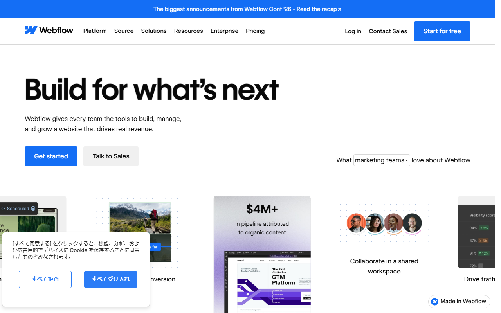

WebflowとWordPressを比較｜料金・SEO・日本語対応の違いと選び方
Webflowはホスティング込みのサイト制作サービスです。WordPress.orgは、別に用意したサーバーへ導入するオープンソースCMSです。
料金、SEO、日本語対応、保守、移行の違いを比べます。選ぶ基準は、管理を誰が担うかです。
WebflowとWordPressの違い（料金・機能・日本語・保守）
- Webflow：制作・公開・ホスティングが一体
- WordPress：サーバーと機能を自分で選ぶ
- 料金：月額と追加費用の構造が違う
- SEO：標準設定と拡張方法が違う
- 日本語：WordPressは日本語UI・文書・フォーラムあり
- 保守：更新を誰が担うかで選ぶ
制作から公開、ホスティングまでまとめたいならWebflowが第一候補です。 サーバーやプラグインを自分で選び、機能を広げたいならWordPressが合います。
無料のStarterで試せる範囲と、独自ドメインで公開する条件を見られます。
本体料金より総費用と保守の分担で差が出る
WebflowはSite planにホスティングを含み、WordPressは構成によって総額が変わります。 WebflowもWorkspace、seat、Add-onは別料金です。公開後の更新や障害対応まで含めて比べます。
Webflowは制作・公開・ホスティングを一つにまとめる
Webflowでは、サイト制作の画面とCMS、ホスティングが同じサービスにまとまっています。独自ドメインで公開するには、サイトごとの有料Site planが必要です。サーバー基盤を別に契約する必要はありません。
制作メンバーや権限を管理するWorkspace planは、公開用のSite planとは別枠です。コンテンツ更新や権限、Apps、請求は、引き続き利用者が管理します。
WordPressはサーバーと機能を自分で組み合わせる
WordPress.orgのソフトウェア本体にライセンス料金はかかりません。一方、公開にはホスティングとドメインが必要で、テーマやプラグインも構成に応じて追加します。
ホスティング込みのWordPress.comは別のサービスです。この記事では、自分でサーバーを用意するWordPress.orgを比較対象にしています。
Site planとWorkspace planの違いを見て、必要な契約だけに絞れます。
WebflowはSite planと追加機能を足して考える
Webflowの費用は、公開するサイト単位で組み立てるのが基本です。
- 無料プラン：StarterはWebflow.ioのサブドメインで公開
- 独自ドメイン：有料Site planが必要
- ホスティング：Site planに含まれる
- 追加費用：複数人ならWorkspaceとseatも必要
- 管理：更新、権限、Apps、請求は利用者が担う
通常のSite planは、年払いの月額換算でBasicが$15です。Premiumは$25です。1ドル=159円換算（執筆時点の目安。為替で変動）では、約2,385円と約3,975円になります。
BasicにはCMSがありません。ブログや導入事例をCMSで更新するなら、CMSを含むPremiumから検討します。
一人で1サイトを公開する場合は、Site planが費用の中心です。複数人で制作する場合は、Workspaceも検討対象です。年払いの月額換算でCoreが$19、Growthが$49です。追加seatはFullが$39、Limitedが$15です。
大規模法人向けのTeamは年契約で月額$2,500、Enterpriseは個別見積もりです。Site、Workspace、seat、Add-onは別々に請求されるため、項目ごとに見積もります。
WordPressはサーバー・ドメイン・追加機能を分けて考える
WordPress.orgは本体が無料でも、サイト全体が無料になるとは限りません。
- 本体料金：ソフトウェアのライセンス料は不要
- 独自ドメイン：取得先と別に契約
- ホスティング：提供会社を選んで契約
- 追加費用：有料テーマやプラグインなど
- 保守：更新、バックアップ、障害対応を分担
費用は契約先と選ぶ機能で変わります。サーバーの相場を一律に置くより、必要なテーマやプラグインまで書き出して見積もるほうが正確です。
BasicとPremiumの月払い・年払い、CMS上限などを比較できます。
日本語版の入手方法と、ソフトウェア本体が無料であることを確認できます。
デザイン制作・更新・機能追加の違い
Webflowは視覚的な制作から公開までを同じ環境で進めます。 WordPressはテーマとプラグインを組み合わせ、ブログやECなどへ構成を広げる仕組みです。
Webflowは画面を見ながらデザインから公開まで進める

Designerでページを組み、CMSで記事や事例を管理します。完成したサイトにフォームを置き、そのまま同じサービスから公開できます。
Figmaとの連携には公式のプラグインとWebflowアプリがあります。ほかの外部連携はMarketplaceのAppsから追加します。導入予定のサービスがMarketplaceにあるか、契約前に確認しておきます。
更新担当者には、制作担当者と異なる権限を割り当てられます。デザインを編集する人と文章を直す人を分けたいチームに向く設計です。
デザイン機能、CMS、テンプレートなど、制作を始める入口をまとめて確認できます。
WordPressはテーマとプラグインで構成を広げる

WordPressはテーマで見た目を決め、ブロック編集で記事や固定ページを作ります。フォームやECなどの機能は、目的に合うプラグインを選んで追加します。
選択肢が多いぶん、テーマとプラグインの更新も管理対象になります。採用するテーマとプラグインを決める段階で、更新担当者まで決めておきます。
日本語版の機能紹介と、テーマ・プラグインを使った拡張の入口が分かります。
SEOは標準機能と細かな拡張のどちらを重視するか
SEO施策はWebflowとWordPressのどちらでも行えます。 違うのは、基本設定を標準機能にまとめるか、追加機能やコードで細かく調整するかです。
Webflowは基本のSEO設定を管理画面でまとめる
Webflowでは、ページごとのタイトルとメタディスクリプションを設定できます。XMLサイトマップの自動生成と301リダイレクトも管理画面で扱います。
- 制作担当：ページ設定でタイトルと説明文を入力
- 公開担当：サイトマップと公開設定を管理
- 移行担当：旧URLから301リダイレクトを設定
- 編集担当：CMSの記事ごとに必要な情報を入力
ページのメタ情報と301リダイレクトには、有料Site planまたは有料Workspaceが必要です。構造化データなどを標準画面の範囲を超えて設定する場合は、別途設計が必要です。
WordPressはプラグインとコードで細かく調整する
WordPressはSEOプラグインを使い、タイトルやサイトマップなどの設定を補えます。テーマやコード側まで触れるため、サイト固有の構造に合わせた調整も可能です。
- 制作担当：テーマの出力とページ構造を設計
- 編集担当：記事ごとのタイトルや説明文を入力
- 保守担当：プラグインとテーマを更新
- 技術担当：相性問題や表示速度を点検
自由度が高い一方、追加した機能の更新も仕事に含まれます。記事数が増えるサイトでは、採用したテーマとSEOプラグインの更新担当者を決めておきます。
日本語対応・サポート・日本からの支払いの違い
日本語環境を優先するならWordPressが有利です。 Webflowでも日本語サイトは作れますが、公式の管理画面とサポートに日本語対応の記載はありません。
Webflowは日本語サイトを作れるが管理画面は英語が中心
Webflowの日本語対応は、次のように分けると誤解を防げます。
- 管理画面：公式の日本語切替は確認できない
- 公開サイト：本文やCMSを日本語で制作可能
- 公式情報：Help Centerは英語版
- 問い合わせ：日本語対応の記載は確認できない
- 支払い：日本からカードで申し込み、USD請求
- 請求書：設定画面からPDFを保存
VisaやMastercardのほか、JCBなどにも対応します。Site planとWorkspace planは別契約です。解約するときも、それぞれ無料Starterへダウングレードします。
訪問者向けの多言語化機能Localizeは、管理画面を日本語化する機能ではありません。
WordPressは日本語版と日本語コミュニティを使える
WordPress.orgには日本語版があり、公式サイトと文書も日本語で読めます。
- 管理画面：日本語ローカライズ版あり
- 公開サイト：日本語で制作可能
- 公式情報：日本語サイトと文書あり
- 問い合わせ：日本語サポートフォーラムあり
- 支払い：本体は無料。契約先ごとに異なる
- 請求書：サーバーやドメインの契約先が発行
サポートフォーラムはコミュニティ型です。有償SLAが付いた専任窓口ではないため、緊急時の対応先はホスティング会社や保守会社も含めて考えます。
日本から申し込む前に、無料枠と有料プランの契約単位を確かめられます。
日本語の公式文書を読み、サポートフォーラムも利用できます。
Webflow・WordPress・Wix・Squarespaceの選び分け
視覚的な制作とホスティングをまとめるならWebflow、管理方法を選ぶならWordPressが中心候補です。 日本語UIが必要ならWix、カード登録なしで試したいならSquarespaceも比較に入ります。
制作・公開・ホスティングをまとめるならWebflow
デザイン担当が画面上でページを作り、そのまま同じサービスから公開したい場合に合います。サーバー基盤を別契約・別保守しなくてよい反面、コンテンツ更新、権限、Apps、請求は自社で管理します。英語中心の管理画面を使えることも条件です。
機能と管理方法を自分で選ぶならWordPress
記事メディアを育てたい場合や、プラグインで機能を足したい場合の候補です。サーバーを選べますが、更新、バックアップ、セキュリティを誰が担うかも一緒に決めます。
日本語UIならWix、カード不要の14日間トライアルならSquarespace
公式情報だけでは、Wixの操作性とSquarespaceのテンプレートが、ほかのサービスより優れているかを同じ条件で比べられません。確認済みの選択基準は、日本語UIと無料公開の条件、無料トライアルの条件です。
Wixには日本語UIがあり、無料でサイトを公開できます。無料版ではWixの広告が表示され、独自ドメインは接続できません。
Squarespaceは日本円表示に対応し、カード登録なしで14日間試せます。日本語対応は段階導入中で、一部の画面は未翻訳です。
四者から選ぶときは、まずサーバーを自分で管理するかどうかを決めます。自分で管理する場合はWordPressが候補です。視覚的な制作とホスティングをまとめるならWebflow、日本語UIが必要ならWixが候補です。カード登録なしで14日間試してから決めたい場合はSquarespaceが合います。
一体型サービスでどこまでデザインできるか、事例とテンプレートから見比べられます。
WordPressとWebflowを乗り換えるときの手順
乗り換えは記事データを移すだけでは終わりません。 URL、デザイン、フォーム、追加機能を洗い出し、移行先で作り直す範囲を先に決めます。
WordPressからWebflowへ移す
WordPressの標準エクスポートは、記事や固定ページなどをWXR形式のXMLファイルにまとめます。Webflow CMSが取り込むのはCSVです。そのため、XMLをCSVへ変換してから、WebflowのCollection項目へ対応付けます。
WordPressのテーマやプラグイン設定は、記事などのコンテンツ移行には含まれません。Webflow側では、デザインと固定ページ、フォームを再構築します。プラグインが担っていた機能もWebflow側で作り直します。最後に旧URLとの対応を確かめ、301リダイレクトを設定します。
- WordPressからWXR形式のXMLを書き出す
- XMLをWebflow用のCSVへ変換する
- CSV列をWebflow CMSの項目へ対応付ける
- デザイン、固定ページ、フォームを再構築する
- 301リダイレクトと内部リンクを更新
- 表示、計測、フォーム送信をテスト
WebflowからWordPressへ移す
WebflowのCMS CollectionはCSVで書き出せます。一方、WordPressの標準インポーターが読み込むのはWXR形式のXMLです。CSVの項目をWordPress側が読み込める形式へ変換し、投稿や固定ページへ対応付けます。
有料WorkspaceではHTML、CSS、JavaScript、画像を書き出せます。ただし、CMSやECのデータ、フォーム送信処理はコード書き出しに含まれません。WordPressのテーマへの組み込みやフォームの再構築、Appsの代替は別作業です。
- Webflow CMSからCollectionをCSVで書き出す
- CSVをWordPress用の形式へ変換する
- 投稿、固定ページ、画像の対応を確かめる
- WordPressのテーマへデザインを組み込む
- フォームやAppsの代替を決める
- 301リダイレクトと内部リンクを更新
- 表示、計測、フォーム送信をテスト
Webflowのプランと、移行後に使う制作機能を確認できます。
WebflowとWordPressのよくある質問
ECでは、Webflowの専用プランを使うか、WordPressへEC用プラグインを組み合わせるかで契約と保守が変わります。
ECサイトにも使える？
Webflowには専用のEcommerce Site planがあります。WordPressではEC用プラグインなどを組み合わせます。商品数だけでなく、決済、在庫、配送、保守を含めて選びましょう。
まとめ：制作・公開・ホスティングならWebflow、自由度ならWordPress
Webflowは、制作から公開、ホスティングまで一つにまとめたい人向けです。 WordPressは、サーバー、テーマ、プラグインを選び、その管理も引き受けられる人に向きます。
- Webflow：英語UIを許容し、サーバー基盤の別契約を省きたい
- WordPress：拡張方法とサーバーを自分で選びたい
- Wix：日本語UIで無料公開から始めたい
- Squarespace：カード登録なしで14日間試したい
- 移行前：データ形式と再構築する機能を分ける
必要なページ数、CMS、フォーム、独自ドメイン、更新担当を書き出すと、月額だけでは見えない差が分かります。
無料Starterで制作を試し、独自ドメイン公開に必要なプランを選べます。
日本語版の入手と、導入後に参照できる公式文書を確認できます。